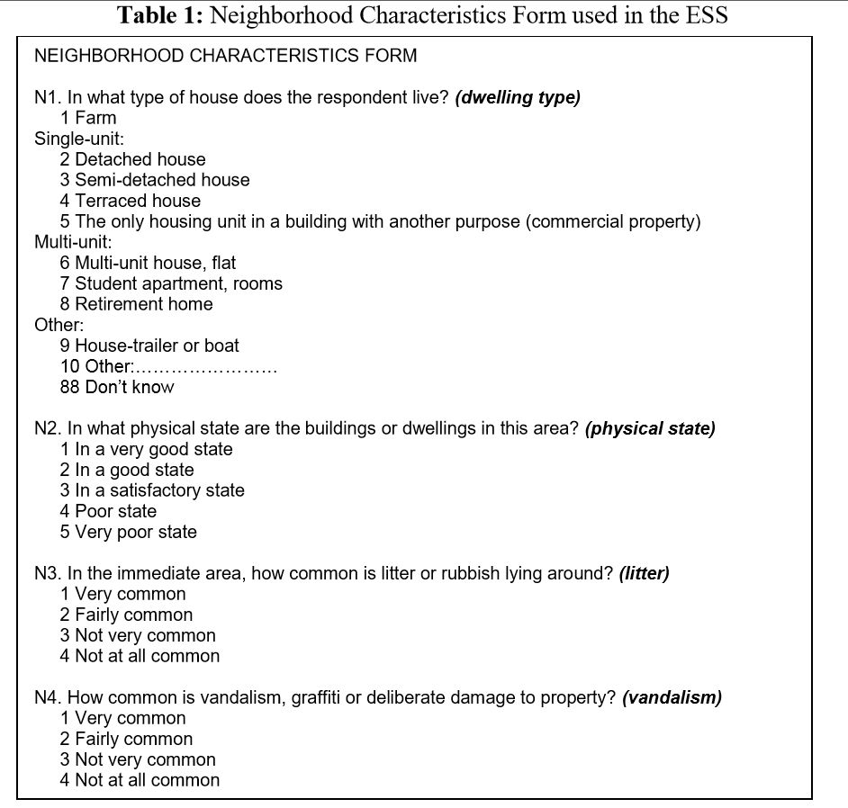

收录于合集
作者简介： 廖福崇，政文观止Poliview特邀作者，复旦大学国际关系与公共事务学院公共行政系博士研究生，研究兴趣为量化研究方法、比较政治态度及公共政策评估。
一、什么是并行数据
并行数据在英文中对应的词汇是Paradata，也译为平行数据。它指的是在调查过程中收集到了有关访问对象除了主要变量之外的信息。Couper（2000）将设计问卷采集的数据称为“元数据”（metadata），而将记录调查过程的数据称为“并行数据”（paradata）。抽样调查所采集的数据实际上是“设计数据”，而不是“真是数据”（孟天广，2018），具体的表现就是问卷中的各种“变量”，实际上是对真实世界剪裁。这些并行数据在设计的主要调查变量之外，是调查过程的记录，在纸笔收集的问卷中主要是由访员评估并且填答的一些问题，在CAPI模式下则是软件系统自动记录的信息。并行数据大致上有如下这样三类：
一是有访员评估的调查对象信息，比如访问对象的配合程度、认知水平、普通话水平、回答可信度等信息。比如2015年中国城乡社会治理调查（CSGS）最后一部分的访问记录，就是由访员自行填答，题项包括访问时有无其他人在场、在场的其他人员是否影响到访问质量、被访者回答可以相信的比例大概是多少等等这类问题。
二是由访员填写的调查地点周边的情况，比如道路硬化情况、房屋情况、卫生状况等。比如2012年世界价值观调查（WVS）问卷中最后一部分的采访记录，就包含有访员自填的关于受访者家中是否通水通电、受访者居住条件、周边的是否有健身设施等信息。再比如2014年中山大学主持的中国劳动力动态调查（CLDS）的访员记录部分，还包括了周围地势、社区是否有怪味、周边是否存在较多游手好闲的人、交通道路是否有路灯等信息。
三是由电脑记录的有关访问过程的信息，比如在CAPI（Computer Assist Personal Interview）模式下的录音、视频、作答时间，键盘轨迹等信息。
在目前进行的全国性大型调查中，中国家庭追踪调查（CFPS）便是使用CAPI模式的代表。调查由北京大学中国社会调查中心主持，该项目设计了专门的调查软件，由访员携带电子设备进行数据采集，调查过程中进行录音，每道题的回答时间和访员操作的键盘轨迹也一并记录。由于是电脑自动显示题项，以及访问全过程的记录，这种模式有效的防止了访员的不规范访问行为，比如跳题、主观臆测、自填问卷等（严洁等，2012）。
并行数据和主要采集的变量并无绝对的区分，A调查的并行数据可能是B调查项目的主要变量。比如关于被访者所处区域周边的交通基础设施情况，WVS和GSGS都是安排在并行数据部分（访问记录部分），但是交通基础设施状况却是CFPS家庭问卷的一个重要变量。当然，CFPS调查的并行数据也包括第一类和第二类并行数据，但是第三类并行数据是CAPI模式调查所独有的。
需要指出的是，在现有调查项目公开的数据中，一般都包括第一类和第二类并行数据，但是第三类并行数据，由于某些原因，一般不予公开。
二、并行数据的主要应用
（一）控制调查质量
**
**
通过对并行数据加以考察，可以一定程度上保证调查的质量。比如关于受访者所在社区的卫生状况和交通状况的填写，必然要求访员到实地查看。这部分信息在后期核查的时候也是比较重要的参考信息。尤其是在CAPI模式下，可以通过电脑系统地实时记录，及时发现并且干预访员臆答等不规范行为，有效保证调查质量（严洁等，2012）。
（二）处理无应答
**
**
无应答是问卷调查中的重要问题，对调查数据中缺失项的处理也直接关系到分析的可靠性。比如，严洁（2005）指出，如果将“无回答”忽略，对于政治体制的支持度将会得出截然不同的结论。并行数据中有关被访者配合程度、可信度等题项，可以辅助进行多种插补（multiple inputation），处理无应答。

ESS(European Social Serevey)采集并行数据的题项
资料来源：Stoop 等，2010
三、 简要总结
目前对于并行数据的应用分析主要集中在有关调查质量控制的议题上，其他延伸性的研究特别是在并行数据与主要变量数据的结合方面还相对较少，其原因主要有两点，一方面是由于电脑系统采集的并行数据往往不公开，这在一定程度上限制了这部分数据的使用。另一方面是目前对于并行数据的使用还不够成熟。
四、参考文献
[1]严洁.政治学研究中的抽样调查:难点、问题与方法创新[J].政治学研究,2018(03):17-28+125.
[2]孟天广.政治科学视角下的大数据方法与因果推论[J].政治学研究,2018(03):29-38+126.
[3]丁华,姚佳慧,严洁.基于CAI模式的调查数据质量控制[J].统计与决策,2017(07):28-31.
[4]丁华,任莉颖,严洁.基于并行数据的调查质量管理[J].统计与决策,2016(20):32-35.
[5]任莉颖,严洁.并行数据与社会调查质量探讨[J].统计与决策,2014(06):27-32.
[6]严洁,邱泽奇,任莉颖,丁华,孙妍.社会调查质量研究:访员臆答与干预效果[J].社会学研究,2012,27(02):168-181+245.
[7]严洁.中国公民对民主政治体制态度的实证分析——就“世界价值观调查”中“无回答”的处理与Russell J. D alton教授商榷[J].华中师范大学学报(人文社会科学版),2005(06):38-43.
[8] Stoop, I., Matsuo, H., Koch, A., & Billiet, J. (2010). Paradata in the European social survey: studying nonresponse and adjusting for bias. JSM Proceeding, Vancouver.
[9] Couper, M. P. (2000). Usability evaluation of computer-assisted survey instruments. Social Science Computer Review, 18(4), 384-396.
编辑：吴温泉
审读：杨端程


“广告点一点，也是支持学术公益 ”
”
政文观止
微信扫一扫赞赏作者 __赞赏
已喜欢，对作者说句悄悄话
取消 __
发送给作者
发送
最多40字，当前共字
上一页 1/3 下一页
长按二维码向我转账
受苹果公司新规定影响，微信 iOS 版的赞赏功能被关闭，可通过二维码转账支持公众号。